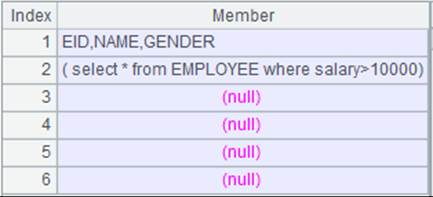
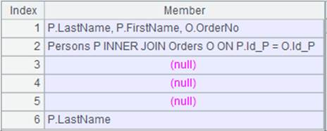
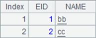

Description:
Write a sequence/cursor to an Excel file object.
Syntax:
xo.xlsexport(A, x:Fi,..;s)
Note:
The function writes a sequence to sheet s in an Excel file. Parameter A can be a cursor when parameter xo is an Excel file object retrieved using @w option.
Parameter:
|
xo |
An Excel file object read in the non-@r way. |
|
A |
A sequence/cursor. |
|
x |
To-be-exported fields; all fields will be exported when omitted. It is a sequence number for locating the field when specified as #. |
|
Fi |
Result field names; use the original field names when this parameter is absent. |
|
s |
Sheet name or sheet number. Create the sheet if the sheet name or number does not exist; and write data to the first sheet when omitted. The sheet name should not exceed 31 characters and contain special characters []:/\?*, and its first and last characters should not be a single quotation mark. |
Option:
|
@t |
Export headers; headers will overwrite the last row if there is data already. |
|
@a |
Append data according to the current format if the page exists; overwrite the existing data by default. |
|
@w |
Use this option when parameter A is a sequence of sequences or a string delimited by CR/tab; it does not work with @t option, and does not need parameters x:F. |
|
@p |
When parameter A is a sequence of sequences, use this option to transpose “first-column-then-row” form of data structure before writing data to a target Excel file; the option must work with @w option. Ignore this option when parameter A is a string delimited by CR/tab. |
Example:
|
|
A |
|
|
1 |
=demo.query("select * from scores") |
Return a table sequence:  |
|
2 |
=file("E11.xlsx") |
|
|
3 |
=A2.xlsopen() |
Read E11.xlsx and return an Excel object. |
|
4 |
=A3.xlsexport@t(A1) |
Write A1’s table sequence into an Excel object. |
|
5 |
=A3.xlsexport@t(A1,CLASS:class,STUDENTID:sid;"Class") |
Create a sheet named Class in an Excel object, rename CLASS field and STUDENTID field in A1’s table sequence and write them into sheet Class. |
|
6 |
=A3.xlsexport@a(A1,STUDENTID,SUBJECT,SCORE; "STUSCORE") |
There is a sheet named STUSCORE in E11.xlsx that has data in it, so append STUDENTID, SUBJECT, SCORE columns in A1’s table sequence to this page. |
|
7 |
[[1,2,3],[4,5,6],[7,8,9]] |
|
|
8 |
=A3.xlsexport@w(A7) |
Write A7’s sequence of sequences to A3’s Excel file:  |
|
9 |
=A3.xlsexport@wp(A7) |
Transpose the “first-column-then-row” content and write it to the Excel file:
|
|
10 |
=file("e7.xls").xlsimport@s(;1) |
Return a string delimited by CR/tab:
|
|
11 |
=A3.xlsexport@w(A10) |
Write A10’s string to A3’s Excel file:  |
|
12 |
=A3.xlsexport@wp(A10) |
As A10 returns a string delimited by CR/tab, ignore @p option and the export result is the same as A11. |
|
13 |
=A2.xlswrite(A3) |
Save the Excel object in E11.xlsx using the xlswrite() function. |